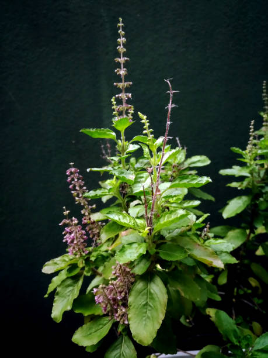

Scientific Information
Family: Lamiaceae
Native Region: Indian Subcontinent
Plant Type: Perennial herb
Height: 30-60 cm
Flowering Season: Late summer to early winter
Traditional Significance
Tulsi holds immense spiritual and cultural importance:
- Considered sacred in Hinduism
- Known as "Vishnu Priya" (beloved of Vishnu)
- Grown in temples and households
- Used in daily worship rituals
- Symbol of purity and protection
Medicinal Properties
- Powerful adaptogenic herb
- Natural immunomodulator
- Anti-inflammatory effects
- Antioxidant properties
- Respiratory system support
- Stress-reducing qualities
Common Uses
- Herbal tea preparation
- Treatment of cough and cold
- Stress management
- Respiratory health
- Digestive aid
- Immunity boosting
Cultivation Tips
- Needs well-draining soil
- Prefers full sunlight
- Regular watering required
- Space plants 30-45 cm apart
- Pinch off flower buds
- Protect from frost
Safety Precautions
- May interact with medications
- Consult before surgery
- Moderate use during pregnancy
- May affect blood sugar
- Start with small doses
- Consult healthcare provider